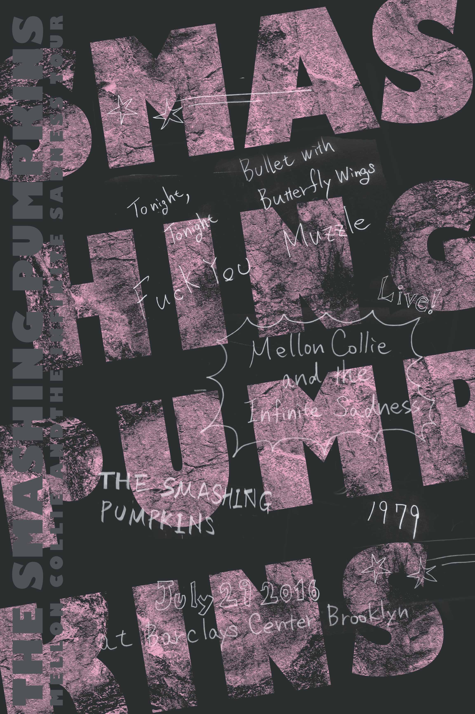

Gig Poster
Graphic Design, Education
Tools Used : Illustrator, Hand-writing

In 2015, I took a class for design at Parsons New School and strolled around new york city with the teacher and classmates to find out a culture or sense of new yorker, also visited to the whitney museum to be taught what is a history/new of the new york art. We had some projects on the ny art through the class, the ones which was finished as a gig poster and typography.
The project assigned:
(The process is define problem > research > brainstorm > design > evaluate > improve)
What is the gig poster:
How to solve it:
Here is a example of a mta station as old as the one was built for the first time. Too much shabby now.
My idea for the poster was also coming from a graffiti that would be expected to be there, along with the shabby wall in the station. The texts written to a paper and scanned was used.
Some variations here to hand in and after getting an advice and adding the fix, the one in black was finally completed.

Line up of the students' posters (bottom right most is mine)
← Back to Home